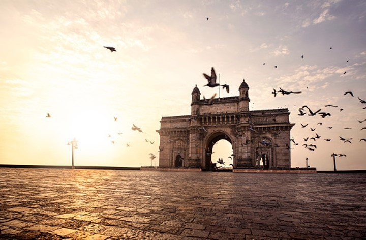
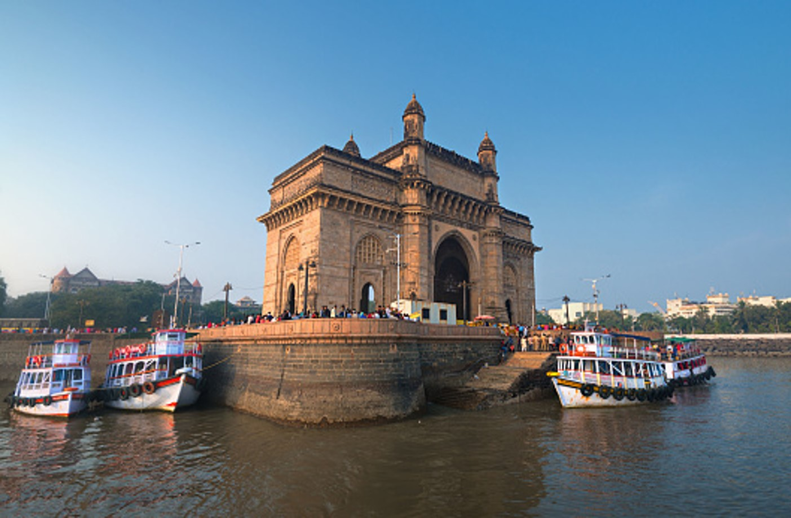
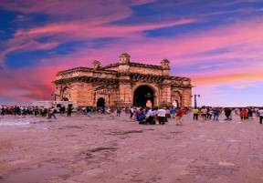

The Gateway of India is an arch-monument built in the early 20th century in the city of Mumbai, also known as Bombay, India. It was erected to commemorate the landing of King-Emperor George V, the first British monarch to visit India, in December 1911 at Ramchandani Road near Shyamaprasad Mukherjee Chowk in Mumbai. The Gateway of India was built to commemorate the arrival of George V, Emperor of India and Mary of Teck, Empress consort, in India at Apollo Bunder, Mumbai (Bombay) on 2 December 1911 prior to the Delhi Durbar of 1911; it was the first visit of a British monarch to India.
Timing : Gateway of India is open 24 hours for public, and. it is around 2.5 km far from Chhatrapati Shivaji Terminal and 2.4 km from Churchgate Railway Station.


